1加圧溶解方式
気体を高い圧力で水に溶かし、一気に減圧してナノバブルを生成

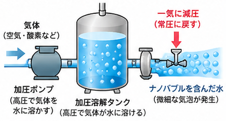
原理高い圧力で多くの気体を水に溶かし、急に圧力を下げることで、溶けきれなくなった気体が、非常に小さな気泡(ナノバブル)として発生します。
研究を続けた技術から、製品が生まれました。代表・林が長年向き合ってきた水と空気の研究を、図と実験写真、測定データでご紹介します。
株式会社FuwaRefreの代表・林は、技術者として長年、水と空気の力を最大限に引き出す独自の生成技術を研究してきました。
準備中です。研究の経緯と主な実績を掲載します。
準備中です。研究への想いを掲載します。
滝では、高い所から落ちた水が勢いよく砕け、細かな水しぶきになります。このとき、水と空気はいっしょに細かく砕かれています。
FuwaRefreの技術は、この自然の水の動きがヒントです。滝のように「水と空気が同時に細かく砕かれる状態」を、製品の中でつくることを目指して研究を重ねてきました。
代表・林が作成した図です。落ちる水が分かれるときに起こる「レナード効果」と呼ばれる現象を表しています。
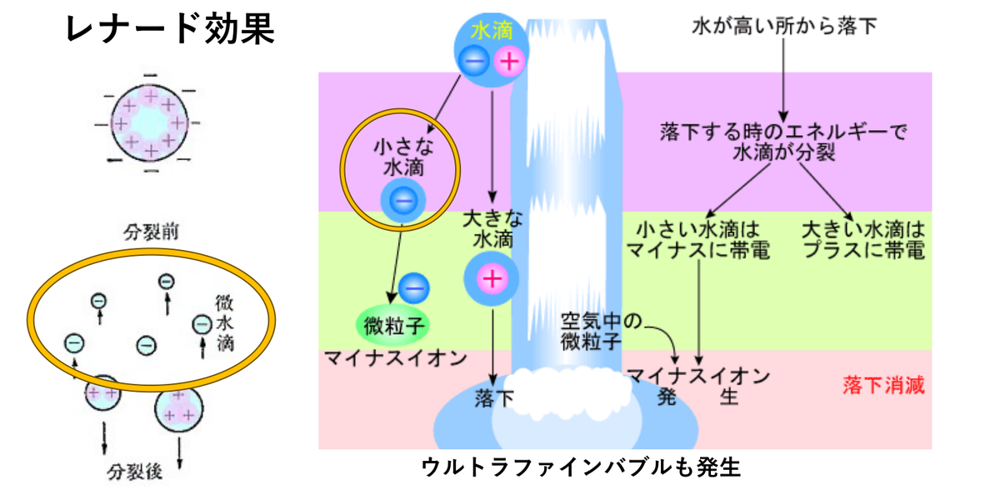
このとき、水の中にはウルトラファインバブル(目に見えないほど小さな気泡)も発生します。りふれ製品は、水そのものを細かく粉砕しながら空気を巻き込み、水と空気が同時に超粉砕された状態をつくります。
直径が1µm(1,000nm)より小さな気泡を、ウルトラファインバブル(UFB)と呼びます。目に見えないほど小さく、水の中での動き方も、ふだん目にする泡とは異なります。
| 泡の種類 | 泡の直径 | 目で見たとき | 水の中での動き |
|---|---|---|---|
| ウルトラファインバブル(UFB) | 数十nm〜1µm | 見えない(無色透明) | 浮き上がらず、水中に長くとどまる。ブラウン運動(細かく揺れ動く)をする |
| マイクロバブル | 1〜100µm | 見える(白くにごる) | 非常にゆっくりと浮き上がり、水中で消える |
| ミリバブル・サブミリバブル | 100µm〜 | 見える | すばやく浮き上がり、水面ではじける |
※1µm(マイクロメートル)=1,000nm(ナノメートル)。表は一般的な目安です。
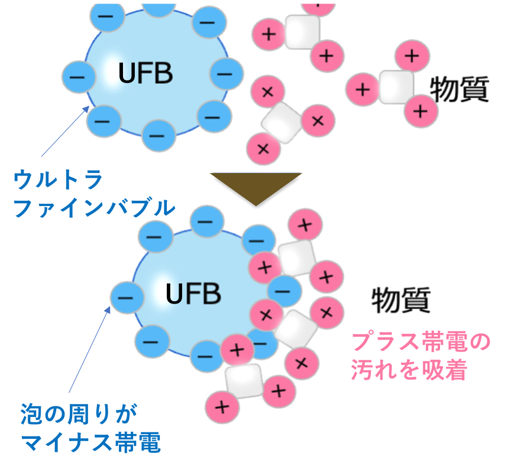
ウルトラファインバブルの周りはマイナスに帯電しています。そのため、プラスに帯電した物質を引き寄せ、吸着する性質があるとされています。
※一般的な性質の説明です。洗浄・消臭などの性能を保証するものではありません。
水の中のウルトラファインバブルは、ブラウン運動と呼ばれる細かな動きをしています。測定装置で、その様子を撮影しました。
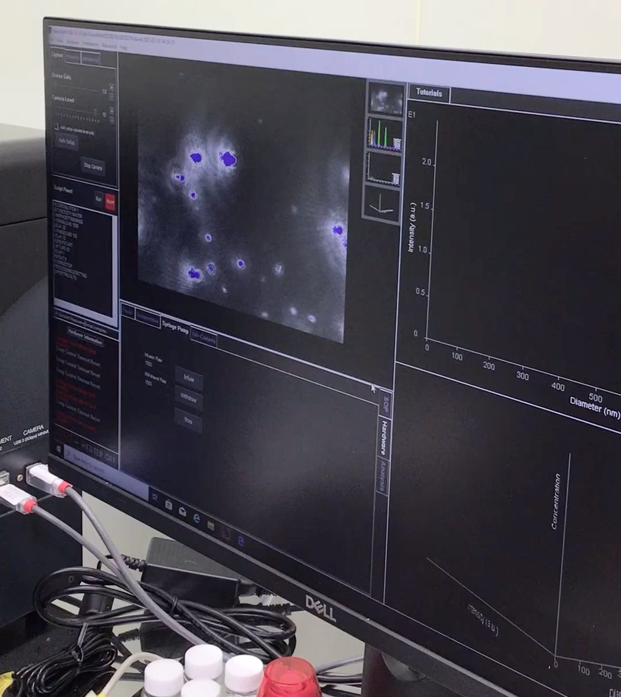
水や液体の中に、非常に小さな気泡(ナノバブル:1〜100nm程度)を作る方法はいくつかあります。ここでは代表的な方式を、わかりやすく図で説明します。
気体を高い圧力で水に溶かし、一気に減圧してナノバブルを生成

原理高い圧力で多くの気体を水に溶かし、急に圧力を下げることで、溶けきれなくなった気体が、非常に小さな気泡(ナノバブル)として発生します。
流れの中で圧力を下げて気体を吸い込み、強いせん断力でナノバブルを生成
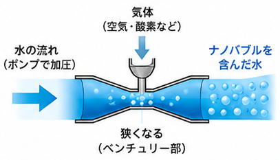
原理狭い部分で水の流れが速くなり、圧力が低下して気体が吸い込まれます。水と気体が高速で混ざり、強いせん断力によって微細な気泡(ナノバブル)が生成されます。
水を高速で回転させて、強いせん断力でナノバブルを生成
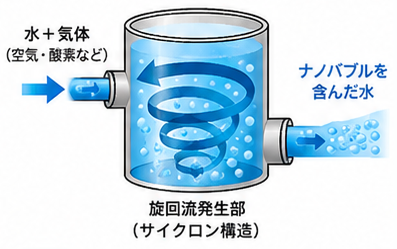
原理水と気体を容器内で高速回転させ、強い遠心力とせん断力によって気体を細かく分散させ、ナノバブルを生成します。
ポンプや超音波で水の中にキャビテーション(微小な空洞)を発生させ、その崩壊時のエネルギーでナノバブルを生成
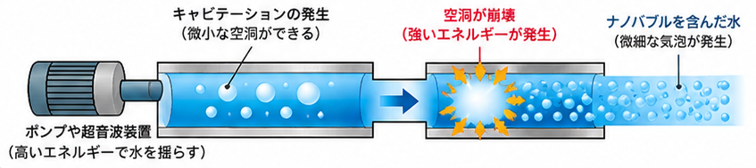
原理水の中で一瞬、圧力が下がって小さな空洞(キャビテーション気泡)ができます。その空洞がつぶれるときの強いエネルギーによって、周囲の気体が非常に小さな気泡(ナノバブル)として生成されます。
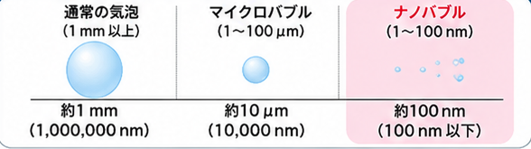
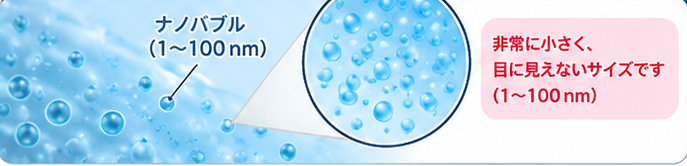
ナノバブル(1〜100nm)は、非常に小さく、目に見えないサイズです。
※各方式の図は、ナノバブルの一般的な生成方法を説明するためのものです。FuwaRefreの生成工程は「07 生成工程」をご覧ください。図はタップ(クリック)すると拡大して表示します。
りふれウォーターに含まれる気泡を測定した、当社資料掲載の実測例です。
出典:FuwaRefre「ホームページ A4ページ版」2ページ(当社測定条件による実測例)。数値は使用条件や測定条件によって異なります。
ナノ粒子解析装置で、水の中の粒子の大きさと数を測定した結果のグラフです。横軸は粒子の大きさ(nm)、縦軸は1mLあたりの粒子の数を表します。
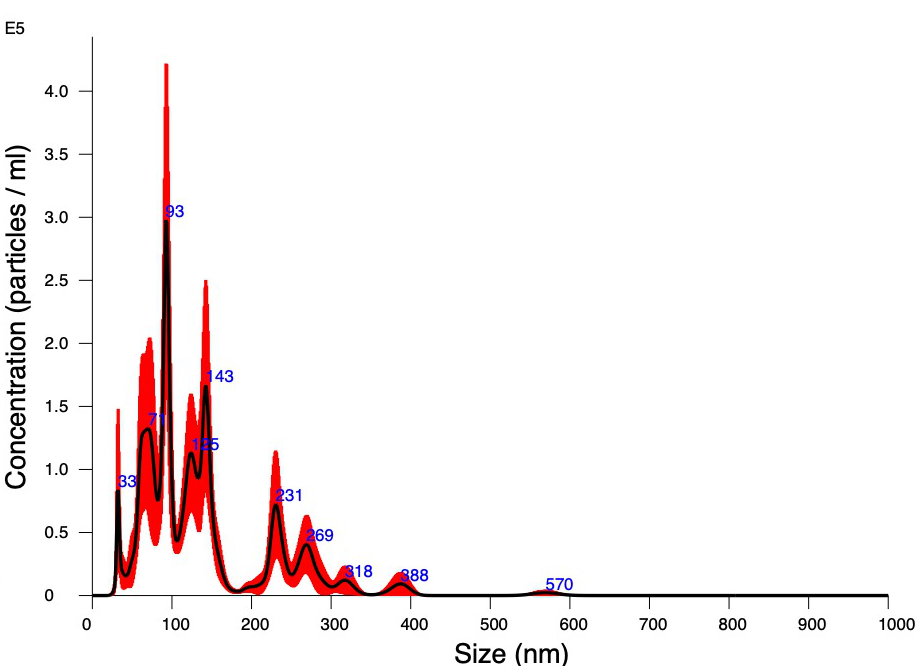
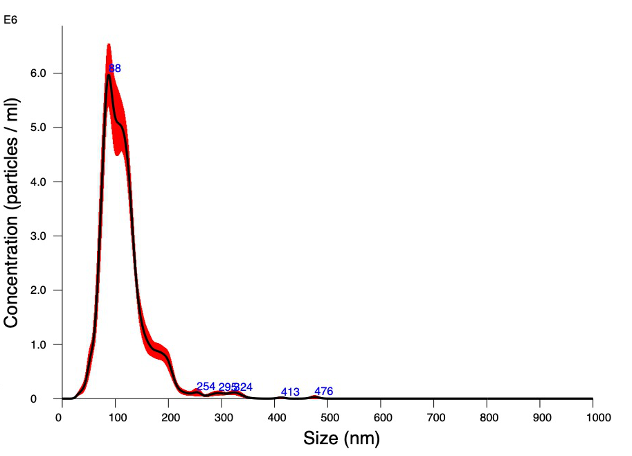
※測定画面の一部です。測定方法・測定条件・試料によって結果は異なります。
「気泡を小さくする」のではなく、「水を小さくする」という発想。水を細かく粉砕する過程で空気を巻き込み、水が小さくなることで取り込まれる気泡も小さくなる。これがFuwaRefre独自の「水粉砕・空気巻き込み方式」です。
特殊な構造により、水を非常に細かく粉砕します。
粉砕された水の流れの中へ、空気を効率よく巻き込みます。
水が小さくなることで、取り込まれる気泡も小さくなります。
安定した微細気泡を含んだ水を、さまざまな用途に活用します。